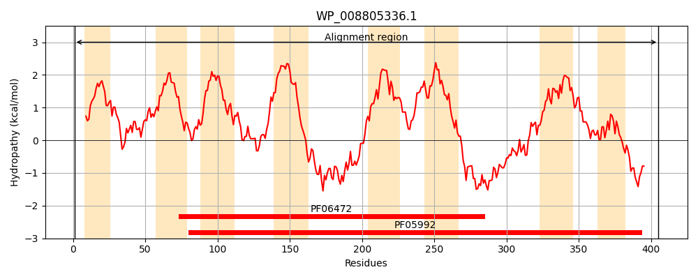
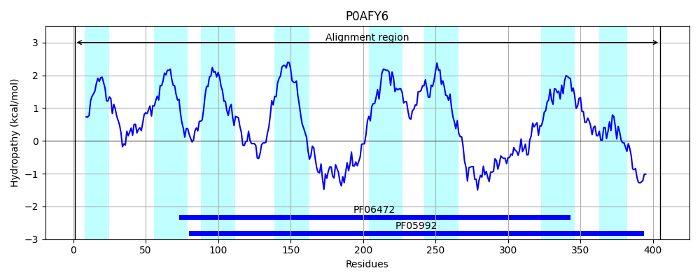
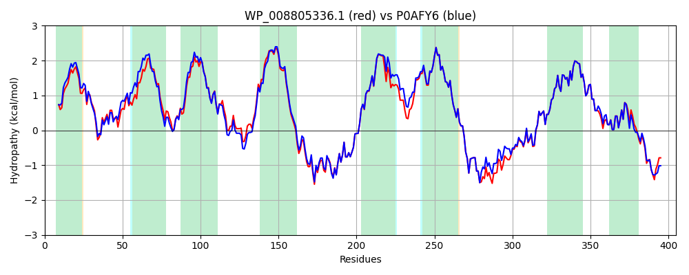

Hit Accession: P0AFY6
Hit TCID: 9.A.18.1.1
Hit Description: gnl|BL_ORD_ID|8845 gnl|TC-DB|P0AFY6|9.A.18.1.1 Protein sbmA - Escherichia coli.
Mach Len: 405
e:0.000000
Query TMS Count : 8
Hit TMS Count: 8
TMS-Overlap Score: 9.100000
Predicted Substrates:CHEBI:64627;microcin
BLAST Alignment:
Score: 1918 , Bit scores: 743 bits, E-value: 0.0e+00, Alignment length: 405, Percentage identity: 87
Query: 1 MFKSFFPKPGPFFISAFIWSLLAVIFWQAGGGDWLLRVTGASQNVAISAARFWSLNYLVFYAYYLFCVGVFALFWFVYCPHRWQYWSILGTSLIIFVTWFLVEVGVAINAWYAPFYDLIQSALATPHKVSINQFYHEIGIFLGIALIAVIIGVMNNFFVSHYVFRWRTAMNEHYMAHWQHLRHIEGAAQRVQEDTMRFASTLEDMGVSFINAVMTLIAFLPVLVTLSEHVPDLPIVGHLPYGLVIAAIVWSLMGTGLLAVVGIKLPGLEFKNQRVEAAYRKELVYGEDDETRATPPTVRELFSAVRRNYFRLYFHYMYFNIARILYLQVDNVFGLFLLFPSIVAGTITLGLMTQITNVFGQVRGSFQYLISSWTTLVELMSIYKRLRSFERELDGKPLQEAIPTL 405
MFKSFFPKPG FF+SAF+W+L+AVIFWQAGGGDW+ R+TGAS + ISAARFWSL++L+FYAYY+ CVG+FALFWF+Y PHRWQYWSILGT+LIIFVTWFLVEVGVA+NAWYAPFYDLIQ+AL++PHKV+I QFY E+G+FLGIALIAV+I V+NNFFVSHYVFRWRTAMNE+YMA+WQ LRHIEGAAQRVQEDTMRFASTLE+MGVSFINA+MTLIAFLPVLVTLS HVP+LPI+GH+PYGLVIAAIVWSLMGTGLLAVVGIKLPGLEFKNQRVEAAYRKELVYGEDD TRATPPTVRELFSAVR+NYFRLYFHYMYFNIARILYLQVDNVFGLFLLFPSIVAGTITLGLMTQITNVFGQVRG+FQYLI+SWTTLVELMSIYKRLRSFE ELDG +QE TL
Sbjct: 1 MFKSFFPKPGTFFLSAFVWALIAVIFWQAGGGDWVARITGASGQIPISAARFWSLDFLIFYAYYIVCVGLFALFWFIYSPHRWQYWSILGTALIIFVTWFLVEVGVAVNAWYAPFYDLIQTALSSPHKVTIEQFYREVGVFLGIALIAVVISVLNNFFVSHYVFRWRTAMNEYYMANWQQLRHIEGAAQRVQEDTMRFASTLENMGVSFINAIMTLIAFLPVLVTLSAHVPELPIIGHIPYGLVIAAIVWSLMGTGLLAVVGIKLPGLEFKNQRVEAAYRKELVYGEDDATRATPPTVRELFSAVRKNYFRLYFHYMYFNIARILYLQVDNVFGLFLLFPSIVAGTITLGLMTQITNVFGQVRGAFQYLINSWTTLVELMSIYKRLRSFEHELDGDKIQEVTHTL 405 | Protein Hydropathy Plots: |
|---|
|  |  |
Pairwise Alignment-Hydropathy Plot:
|
|---|
|  |